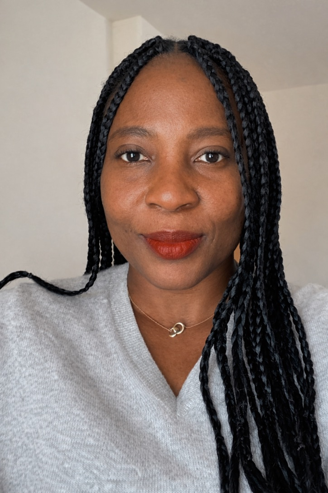

I was honored to be featured in the UMSI ADAA story “Where Learning Meets Impact,” highlighting my capstone experience working with the Ann Arbor Hands-On Museum.
From data to decisions
A project designed for real use.
As part of our BSI capstone project, my team worked with a real-world client to develop interactive dashboards for analyzing attendance trends, membership patterns, and donor behavior.
Working directly with the museum helped me understand how data analytics can move beyond the classroom and support real organizational decisions. The dashboards were not simply class assignments—they were designed for the museum to actually use.

“Seeing that the museum will use the dashboards to understand donors and plan better fundraising made me realize I want a career where I use data to make a real impact.”
— Olga K. Hamilton
What I learned
Skills strengthened through collaboration.
Through this experience, I strengthened my skills in data analytics, dashboard development, stakeholder communication, teamwork, and presenting technical information to different audiences.
Most importantly, the project reinforced my interest in using data to support decision-making and create meaningful impact.